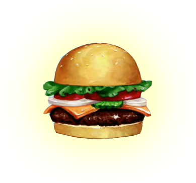

bienvenue dans notre pizzeria
Nous sommes une pizzeria qui vend en ligne et sur place, des pizza de bonne qualitéet virement tree tree bonnes.
Nous proposons aussi des burger nommet Krabby Patty

Nous sommes fiers de proposer un service client exceptionnel et rapide pour que vous soyez satisfait.
Nous vous invitons à visiter notre site web et à découvrir notre nourriture "fast-food". Et Nous sommes sûrs que vous trouverez quelque
chose qui vous plaît.